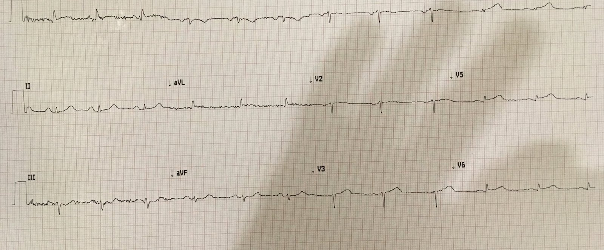
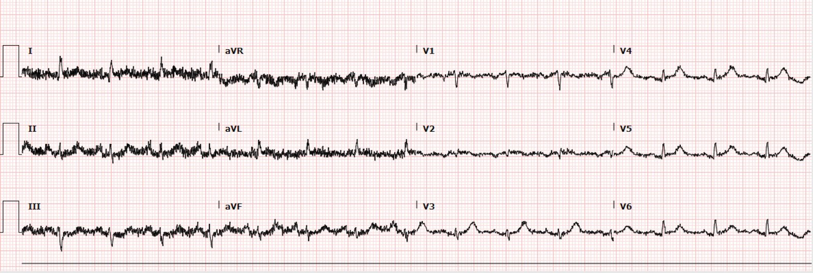
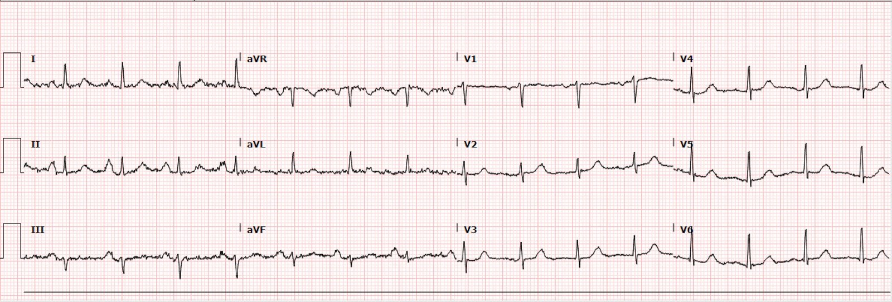
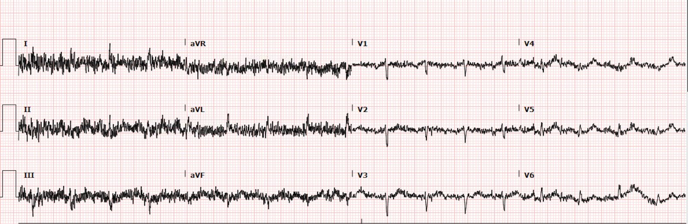
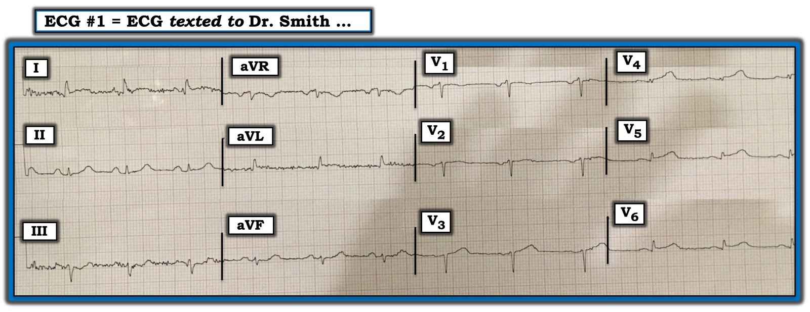
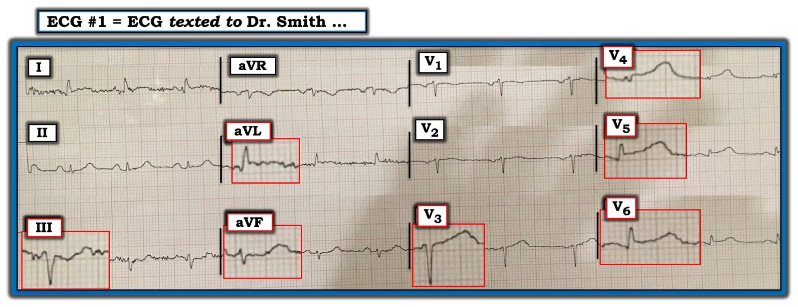

17/07/2019 — Một tin nhắn giữa đêm. Bạn có cho thuốc tiêu sợi huyết không?
Bản dịch tiếng Việt của bài "A Text Message in the Middle of the night. Do you give thrombolytics?" – Dr. Smith’s ECG Blog. Giữ nguyên toàn bộ 9 hình ảnh của bản gốc.
Sáng thức dậy, tôi phát hiện một tin nhắn kèm điện tâm đồ này do một cựu bác sĩ nội trú gửi từ 6 giờ trước:
“Bệnh nhân 60 tuổi đau ngực điển hình. Phòng thông tim (cath lab) đang bận trong 90 phút tới. Bên Tim mạch nói “không phải STEMI”. Đang tính cho thuốc tiêu sợi huyết.”


Tôi nhắn lại: “Xin lỗi vì trả lời muộn! Lúc đó tôi đang ngủ. Đây là OMI!! Bạn đã cho thuốc tiêu sợi huyết chưa? LAD đoạn gần. Phát hiện tuyệt vời!”
Có ST chênh lên 0.5 mm ở V3-V6. Sóng T ở V4 quá lớn so với QRS. Công thức tắc LAD sẽ cho giá trị rất cao do sóng R ở V4 và QRS ở V2 cực kỳ nhỏ, nhưng không có QT thì tôi không thể tính chính xác.
Điện tâm đồ này có giá trị chẩn đoán OMI do LAD. Nhồi máu cơ tim do tắc (Occlusion Myocardial Infarction).
Tôi viết tiếp:
“Bên Tim mạch đã đúng. Đây không phải STEMI. Nhưng mô hình mới là OMI. Và đó mới là điều quan trọng. ST chênh lên là một cách rất kém để định nghĩa nhồi máu cơ tim. Chúng tôi có vài bài báo, một bài đang in và một bài đang được bình duyệt, mà chúng tôi hy vọng sẽ tiếp tục thúc đẩy việc thay đổi mô hình chưa thỏa đáng đó.”
Thêm thông tin về ca bệnh:
Bệnh sử: Phụ nữ 60 tuổi có tiền sử hút thuốc lá nhưng không có yếu tố nguy cơ tim mạch nào khác, đến khu phân loại (triage) vì đau ngực. Bà
thức dậy vào buổi sáng với dị cảm hai tay và đến tối
đã gọi đường dây tư vấn của điều dưỡng, nơi bà được bảo rằng có thể bà đang bị nhồi máu cơ tim (heart attack)
và nên tới khoa cấp cứu (ED) để được đánh giá.
Khi đang ở trong xe, bà xuất hiện cảm giác đè nặng
giữa ngực lan lên vai phải khoảng 20 phút trước khi
đến viện.
Bà được khám tại khu phân loại, nơi bà được ghi một điện tâm đồ lúc T0:


(Có thể chẩn đoán mà không cần xem điện tâm đồ nền, nhưng điện tâm đồ nền có ở bên dưới nếu bạn muốn xem)?
Có sẵn một điện tâm đồ nền và điện tâm đồ này cũng được đính kèm.


Giờ thì bạn đã biết chẩn đoán. Tắc LAD cấp.
Nhưng khoa cấp cứu là một nơi bận rộn:
“Bà bị tăng huyết áp với huyết áp tâm thu khoảng 190 đến 200 mấy nhưng các dấu hiệu sinh tồn khác
bình thường. Khoa cấp cứu rất đông và không còn phòng trống.
“Điện tâm đồ lúc phân loại (triage)
đã được đưa cho một bác sĩ xem, thật lòng tôi không nhớ là tôi hay một trong
các đồng nghiệp của tôi, và người phụ trách ở khu phân loại đã chỉ định các xét nghiệm và X-quang ngực.
“Đến
lúc bà được đưa vào phòng và tôi tự nhận chăm sóc bà thì đã khoảng 1
giờ sau. Bà vẫn tăng huyết áp rất nhiều và có một ghi chú của điều dưỡng
nói rằng bà quá lo lắng nên chưa ghi lại được điện tâm đồ và đề nghị
y lệnh Ativan.
“Khi tôi đang xem lại thông tin phân loại và điện tâm đồ
ban đầu của bà thì một bệnh nhân khác được đưa vào phòng, trông có vẻ nguy kịch với
STEMI.
“Tôi chỉ định cho bà aspirin, NTG, fentanyl, một điện tâm đồ ghi lại rồi bước
vào phòng của bệnh nhân STEMI mới.
“Khi tôi bước vào phòng đó thì phòng xét nghiệm gọi báo giá trị troponin ban đầu của bà
là 1.0 (LOD < 0.03). Điện tâm đồ ghi lại mà tôi chỉ định được đính kèm ở đây là
điện tâm đồ #2 và được ghi lúc T+70.”


“Tôi kích hoạt phòng thông tim cho bệnh nhân thứ 2 và
không thể tới giường bà cho đến khoảng 30 phút sau. Cơn đau
và tăng huyết áp (HTN) của bà đã cải thiện nhưng bà vẫn còn đau ngực đang tiếp diễn. Tôi chỉ định thêm
NTG và fentanyl và ghi thêm một điện tâm đồ nữa.”
(Điện tâm đồ 3-2 lúc T+100
đính kèm ở đây).
Đây là điện tâm đồ ở đầu bài
“Đến thời điểm này tôi kích hoạt phòng thông tim.
“Bác sĩ tim mạch của chúng tôi quay lại khoa cấp cứu, xem điện tâm đồ gần
nhất và nói, “Đó không phải STEMI”. Tôi nói với anh ấy rằng tôi không đồng ý và cho rằng
bệnh nhân cần thông tim cấp cứu. Anh ấy nói rằng dù thế nào
họ cũng không thể nhận bà trong ít nhất 90 phút vì họ vừa mới
bắt đầu ca bệnh kia mà tôi đã chuyển tới.
“Đó là
lúc tôi nhắn tin cho anh.
“Chúng tôi đã cho heparin, bắt đầu truyền nitroglycerin liên tục và
đang cân nhắc cho thuốc tiêu sợi huyết thì điều phối viên của khoa đã
tìm được một bác sĩ tim mạch đồng ý nhận bệnh ở bệnh viện cuối phố trong
khoảng 5 phút.
“Bà được đưa đi thông tim cấp cứu (khi xem lại hồ sơ tôi không xác định được
thời điểm chính xác) và phát hiện tắc 100% do huyết khối
ở LADD1 đoạn xa, đã được đặt stent. Troponin I của bà ở đó là >50 (họ không đo cao hơn mức này). Chưa có siêu âm tim sau
thông tim.”
Câu hỏi vẫn còn đó (tiêu sợi huyết?):
Nếu không có phòng thông tim, thuốc tiêu sợi huyết có được chỉ định không? Nếu tôi là bác sĩ điều trị, tôi sẽ cho thuốc tiêu sợi huyết. Nhưng đó là vì tôi chắc chắn đây là tắc LAD đến mức trong đầu tôi không còn chút nghi ngờ nào rằng tỷ số lợi ích/nguy cơ của thuốc tiêu sợi huyết nghiêng về phía điều trị.
Đọc kỹ toàn bộ y văn gốc về tiêu sợi huyết sẽ thấy các “tiêu chuẩn” để cho thuốc tiêu sợi huyết cực kỳ thiếu chính xác. Hơn nữa, có nhiều y văn gần đây cho thấy tắc mạch vành cấp thường không đáp ứng tiêu chuẩn. Trong nghiên cứu tốt nhất cho đến nay, công bố tháng trước, ST chênh lên có độ nhạy 35% đối với STEMI đã được thẩm định (51% trên các điện tâm đồ liên tiếp) và độ nhạy 21% đối với OMI (30% trên các điện tâm đồ liên tiếp). Các bác sĩ tim mạch có độ nhạy 49% đối với OMI.
Nếu tôi chẩn đoán tắc mạch vành cấp, bất kể “tiêu chuẩn STEMI”, ở một động mạch cấp máu cho một vùng cơ tim đáng kể, và phòng thông tim không sẵn sàng, tôi sẽ cho thuốc tiêu sợi huyết nếu không có chống chỉ định thực sự nghiêm trọng nào. Tôi sẽ không khuyến cáo mọi người làm như vậy vì việc này phụ thuộc rất nhiều vào kỹ năng đọc điện tâm đồ và các kỹ năng khác để chắc chắn về chẩn đoán.
Prospective validation of current quantitative electrocardiographic criteria for ST-elevation myocardial infarction (Thẩm định tiến cứu các tiêu chuẩn điện tâm đồ định lượng hiện hành cho nhồi máu cơ tim ST chênh lên)
Pendell và tôi đã viết một Bài xã luận (Editorial) về vấn đề này, nhưng chúng tôi không thể đăng lại ở đây:
H. Pendell Meyers. Stephen W. Smith. Prospective, real-world evidence showing the gap between ST elevation myocardial infarction (STEMI) and occlusion MI (OMI) (Bằng chứng tiến cứu, từ thực tế, cho thấy khoảng cách giữa nhồi máu cơ tim ST chênh lên (STEMI) và nhồi máu cơ tim do tắc (OMI))

===================================
Bình luận của KEN GRAUER, MD (18/7/2019):
===================================
Ca này trở nên đặc biệt khó vì kích thước phức bộ QRS nhỏ, nhiễu đường nền ở một số chuyển đạo, và việc tiếp tục sử dụng mô hình “stemi” đã lỗi thời để xác định [tắc] mạch vành cấp.
- Tôi tập trung vào việc diễn giải điện tâm đồ đã được nhắn tin tới Dr. Smith ( = Điện tâm đồ #1 trong Hình 1).
- LƯU Ý: Có điện thế thấp ở cả 12 chuyển đạo. Để giúp việc diễn giải dễ dàng hơn — tôi đã ghi lại nhãn cho bản ghi này, và đã loại bỏ một phần khoảng trống thừa giữa các nhóm chuyển đạo. Tôi tin rằng làm như vậy giúp dễ nhận ra các thay đổi ST-sóng T cấp tính hơn.


SUY NGHĨ CỦA TÔI về Điện tâm đồ #1: Bệnh nhân được nói tới là một phụ nữ 60 tuổi bị đau ngực điển hình mới khởi phát. Như Dr. Smith đã nêu — điện tâm đồ trong Hình 1 được nhắn tin tới ông có giá trị chẩn đoán OMI cấp.
Phân tích mô tả Điện tâm đồ #1:
- Điện thế thấp! Có nhiễu đường nền ở một số chuyển đạo chi. Nhịp là nhịp xoang khoảng ~80/phút. Khoảng PR bình thường. Tất cả các khoảng (PR, QRS, QTc) đều bình thường. Trục mặt phẳng trán hơi lệch trái (tức là, âm nhiều hơn dương ở chuyển đạo aVF) — nhưng không đủ âm để đạt tiêu chuẩn LAHB (blốc phân nhánh trái trước), vì QRS không âm ưu thế ở chuyển đạo II. Tôi ước tính trục vào khoảng -15 độ. Không có lớn buồng tim.
Về Thay đổi Q–R–S–T:
- Có các sóng Q nhỏ, hẹp ở các chuyển đạo aVL, V5 và V6. Ý nghĩa của các sóng Q này chưa chắc chắn.
- Vùng chuyển tiếp (tức là, nơi sóng R trở nên cao hơn độ sâu của sóng S) hơi muộn (tức là, nó xảy ra giữa chuyển đạo V4 và V5). Quan trọng hơn — sóng R vẫn rất nhỏ cho tới chuyển đạo V5. Điều này nhiều khả năng có liên quan đến quá trình cấp tính đang diễn ra.
Như đã được ghi nhận — Thay đổi ST-sóng T có giá trị chẩn đoán:
- Xét đến kích thước rất nhỏ của phức bộ QRS — có ST chênh lên đáng kể ở các chuyển đạo V3 đến V6. Hình ảnh này đi kèm với sóng T tối cấp (cao và đầy đặn ở đỉnh quá mức một cách không tương xứng so với lẽ ra phải có) ở các chuyển đạo V3, V4, V5, và có lẽ cả V6.
- Ở các chuyển đạo chi — có ST chênh lên ở chuyển đạo aVL + thay đổi ST-T soi gương ở mỗi chuyển đạo thành dưới. Dù khó nhận thấy hơn do nhiễu và kích thước QRS nhỏ — đoạn ST thẳng đuỗn rõ rệt ở chuyển đạo II và aVF; hơi chênh xuống ở chuyển đạo III; và, đi kèm với kích thước sóng T không tương xứng ở cả 3 chuyển đạo thành dưới.
- Nhận xét Cá nhân: Chẳng phải việc phóng to gấp đôi kích thước phức bộ QRST ở một số chuyển đạo của điện tâm đồ #1 giúp dễ nhận ra một OMI cấp chắc chắn hơn sao? (Xem Hình 2).


BÌNH LUẬN: Bất kể định nghĩa “STEMI” cấp dựa trên milimét có được thỏa mãn hay không — điện tâm đồ trong Hình 1 có giá trị chẩn đoán OMI cấp ở bệnh nhân này với đau ngực điển hình mới khởi phát. Tái tưới máu cấp được chỉ định.
- Điện tâm đồ trong Hình 1 phù hợp với tắc LAD đoạn giữa hoặc đoạn xa cấp — vì ST chênh lên thực sự không bắt đầu cho tới chuyển đạo V3, và tối đa ở chuyển đạo V4 và V5 (tức là, ST chênh lên thường bắt đầu sớm hơn khi tắc LAD đoạn gần).
- Xét từ góc độ thuật ngữ điện tâm đồ — việc còn giữ được sóng r ban đầu ở chuyển đạo V1 và V2 gợi ý rằng đây không phải là nhồi máu trước vách, mà là nhồi máu thành trước (tức là, xét từ góc độ thuật ngữ — sóng r ban đầu phải mất đi ở chuyển đạo V1 khi có nhồi máu “vách”).
- Dù vậy, việc chỉ còn một sóng r rất nhỏ cho tới chuyển đạo V5, và sau đó cũng chỉ là sóng R tương đối nhỏ ở chuyển đạo V5 và V6 — là phù hợp với vùng cơ tim bị đe dọa rộng lớn được gợi ý bởi số lượng chuyển đạo trên điện tâm đồ #1 có độ lệch ST-T cấp.
- T.B. (P.S.): Nhìn lại một lần nữa các phức bộ được phóng to bên trong các hình chữ nhật MÀU ĐỎ ở Hình 2 — có lẽ rốt cuộc định nghĩa “STEMI” cấp đã được thỏa mãn trong ca này?
Chúng tôi xin CẢM ƠN Dr. Smith đã trình bày ca này!